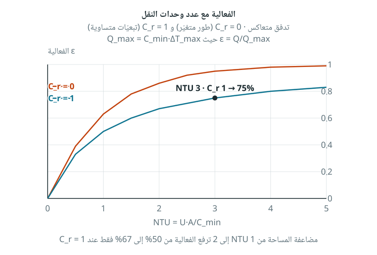

طريقة الفعالية وعدد وحدات النقل
طريقة ε–NTU تحسب حمل المبادل من درجتي دخول فقط: ε = Q/Q_max حيث Q_max = C_min·(T_h,in − T_c,in)، وNTU = U·A/C_min. تُستعمل حين لا تُعرف درجات حرارة الخروج كما في مسائل التصميم.
في مسائل التصميم لا تُعرف حرارة الخروج، فلا يمكن حساب فرق الحرارة اللوغاريتمي قبل الحل. تحلّ الطريقة محلّه بمقياسين: عدد وحدات النقل NTU = U·A/C_min الذي يقيس حجم المبادل منسوبًا إلى سعة المائع الأضعف، والفعالية ε = Q/Q_max التي تقيس ما تحقّق من الحد الأعلى الممكن. الحد الأعلى لا يتجاوز تغيّر حرارة كامل للمائع الأضعف سعةً: Q_max = C_min·(T_h,in − T_c,in). ثم تعطي العلاقات التحليلية ε بدلالة NTU ونسبة السعات C_r = C_min/C_max: في التدفق المتعاكس مع C_r = 0 (طور متغيّر أو مائع بلا تغيّر حراري) تكون ε = 1 − e^(−NTU)، ومع C_r = 1 تكون ε = NTU/(1 + NTU). ولذلك يبلغ مبادل متعاكس بـNTU = 3 فعالية 75% عند تساوي السعتين، ويصل إلى 95% في حالة الطور المتغيّر بالرقم نفسه — وهذه هي القيمة الهندسية للطريقة: المفاضلة بين مساحة (NTU) وفعالية بشكل صريح.
كيف تعمل الظاهرة؟
الفعالية تقيس الاقتراب من الحد الأقصى الممكن ديناميكيًّا. الحد الأقصى يتحقق لو خرج أحد المائعين بدرجة حرارة المائع الآخر الداخلة، وهو مستحيل في مساحة منتهية لأن ذلك يحتاج مساحة لا نهائية (NTU لانهائي) أو تدفقًا متعاكسًا مثاليًّا. كل ما يزيد NTU يقلّل فرق الحرارة الطرفي ويقترب من الحد، لكن الفائدة الحدّية تتناقص، ولذلك لا تُبرَّر المساحة الكبيرة إلا حين يكون فرق الحرارة المطلوب كبيرًا.
العلاقة بالأرقام
مثال: ماء ساخن C = 8,000 واط/كلفن يدخل 90 °م، وماء بارد C = 8,000 يدخل 20 °م، ومبادل متعاكس بـNTU = 3. بما أن C_r = 1 فإن ε = 3/4 = 0.75، ومنه Q = 0.75×8,000×(90−20) = 420 كيلوواط، وتخرج الساخن عند 37.5 °م والبارد عند 72.5 °م. ولو كان الطور متغيّرًا (C_r = 0) لصارت ε = 0.95 وQ = 532 كيلوواط بالمساحة نفسها.
مفاهيم متقاربة
الفعالية ليست الكفاءة الديناميكية الحرارية: الكفاءة تقيس ما تحقّق من شغل مقابل حدّ كارنو، أما الفعالية فتقيس ما تحقّق من انتقال حرارة مقابل حدّ حراري. وليست LMTD: LMTD مقياس لفرق الحرارة يستلزم معرفة الأربع درجات، والفعالية مقياس للأداء يستلزم درجتي الدخول فقط. ولا تُستعمل ε لوصف مبادل بطور متغيّر جزئيًّا بلا تصحيح.
حدود التطبيق
العلاقات التحليلية مشتقة بافتراض سعات حرارية ثابتة، وبلا فقد حراري للمحيط، وبلا توصيل محوري، وبتدفق واحد في كل مسار. وفي المبادلات المتقاطعة أو متعددة المسارات تُقرأ ε من جداول أو مخططات لا من الصيغة، وتصحّح النتيجة بعامل. وعند تغيّر cp مع الحرارة أو تجمّد أو غليان جزئي تُقسَّم المساحة إلى مقاطع ويُحلّ كل مقطع بطريقته.

| الكمية | القيمة | المصدر |
|---|---|---|
| الفعالية عند NTU 3 ونسبة سعات 1 | 75 % | [1] |
| الفعالية عند NTU 3 ونسبة سعات 0 | 95 % | [1] |
| الحمل في المثال عند نسبة سعات 1 | 420 كيلوواط | [1] |
| تعريف عدد وحدات النقل | NTU = U·A/C_min بلا وحدة | [2] |
المصادر
- 1 NTU method — Wikipedia (الإنجليزية). en.wikipedia.org/wiki/NTU_method · اطُّلع عليه 2026-11-19
- 2 Heat Exchangers - Overall Heat Transfer Coefficients — The Engineering ToolBox. www.engineeringtoolbox.com/heat-transfer-coefficients-exchangers-d_450.html · اطُّلع عليه 2026-11-19
- 3 14.6 Convection - College Physics 2e — OpenStax. openstax.org/books/college-physics-2e/pages/14-6-convection · اطُّلع عليه 2026-11-19
استشهد بهذا المصطلح
الصيغتان مبنيتان من بيانات الصفحة نفسها: العنوان والتاريخ ورابط النسخة المنشورة.
طريقة الفعالية وعدد وحدات النقل. (2026). ديوان المعرفة — انفراد. https://infiradev.com/diwan/terms/ntu-effectiveness.html
@misc{ntu-effectiveness2026,
title = {طريقة الفعالية وعدد وحدات النقل},
howpublished = {{ديوان المعرفة — انفراد} — مرجع علمي عربي},
year = {2026},
url = {https://infiradev.com/diwan/terms/ntu-effectiveness.html},
urldate = {2026-11-19},
note = {مراجعة علمية: عبدالله الهويدي — مراجعة في تطبيق انفراد}
}
راجعه: عبدالله الهويدي — مراجعة في تطبيق انفراد · 2026-11-19 · آخر تحديث 2026-11-19